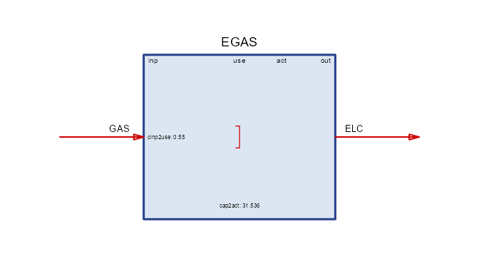

The idea
An energy system is a network of flows: primary resources are extracted or harvested, converted by technologies, moved, stored, and finally consumed as useful energy. Planning such a system — what to build, when, and how to run it — is an optimization problem: meet demand in every place and moment at the lowest total cost, subject to physics and policy.
energyRt is a macro-language for stating that problem in R. You describe the system — fuels, technologies, resources, demands — as R objects, and the package compiles them into a full capacity-expansion and dispatch optimization model: it derives the sets, writes the equations, runs a solver, and returns the solution as tidy tables. The modeling layer (hundreds of index-mapping and bookkeeping decisions) is generated, so your code stays at the level of the energy system itself.
One model, four backends
The energyRt optimization model — around one hundred predefined
equations, extendable with newConstraint() — is implemented
in four mathematical programming languages:
- GLPK / MathProg — open source; bundled with Rtools on Windows, so it works out of the box;
- Julia / JuMP — open source, with fast solvers like HiGHS;
- Python / Pyomo — open source, CBC/HiGHS and others;
- GAMS — the commercial standard in energy-systems work.
The same model object solves on any backend with consistent results — start on GLPK with zero setup, switch to a faster or institutional solver later without touching your model. The full mathematical formulation is documented in the model equations PDF; the solver backends article covers configuration.
The bricks
Models are assembled from a small set of object types:
| Brick | Constructor | Role |
|---|---|---|
| commodity | newCommodity() |
an energy carrier or accounting flow (GAS, ELC, CO2) |
| technology | newTechnology() |
a conversion process — the richest object |
| supply | newSupply() |
a source: fuel at a price, or a free resource |
| demand | newDemand() |
a sink: final consumption to be met |
| storage | newStorage() |
shifts a commodity across time slices |
| weather | newWeather() |
capacity factors and other exogenous profiles |
| repository | newRepository() |
a bag of bricks — the parts library |
| model | newModel() |
repository + regions + calendar + horizon |
| scenario |
interpolate_model() /
solve_scenario()
|
a model instance, solved |
A technology converts inputs to outputs through the chain
input → use → activity → output; costs, capacity,
availability, emissions and secondary flows all attach to it. The model bricks
article walks through every object in depth.
A five-minute model
One fuel, one power plant, one demand — a complete, solvable system:
GAS <- newCommodity("GAS", timeframe = "ANNUAL")
ELC <- newCommodity("ELC", timeframe = "ANNUAL")
SUP_GAS <- newSupply("SUP_GAS", commodity = "GAS",
availability = data.frame(cost = 6.0)) # fuel price, MEUR/PJ
EGAS <- newTechnology("EGAS",
input = list(comm = "GAS"), output = list(comm = "ELC"),
ceff = data.frame(comm = "GAS", cinp2use = 0.55), # 55% efficient
invcost = list(invcost = 900), # MEUR/GW
fixom = 25, cap2act = 31.536, olife = 25L)
DEM_ELC <- newDemand("DEM_ELC", commodity = "ELC",
dem = data.frame(dem = 50)) # 50 PJ a year
draw(EGAS)
Bind the bricks to space and time, and solve on GLPK:
mod <- newModel("HELLO",
data = newRepository("parts", GAS, ELC, SUP_GAS, EGAS, DEM_ELC),
region = "R1", discount = 0.05,
horizon = newHorizon(period = 2025:2040, intervals = c(1, 5, 10),
mid_is_end = TRUE))
scen <- solve_scenario(interpolate_model(mod, name = "BASE"),
solver = solver_options$glpk,
echo = FALSE) # echo = FALSE silences the solver logResults come back as tidy tables:
getData(scen, "vObjective", merge = TRUE) # total discounted system cost, MEUR
#> # A tibble: 1 × 3
#> scenario name value
#> <chr> <chr> <dbl>
#> 1 BASE vObjective 6677.
getData(scen, "vTechCap", merge = TRUE) # capacity the model built, GW
#> # A tibble: 3 × 6
#> scenario name tech region year value
#> <chr> <chr> <chr> <chr> <int> <dbl>
#> 1 BASE vTechCap EGAS R1 2025 1.59
#> 2 BASE vTechCap EGAS R1 2030 1.59
#> 3 BASE vTechCap EGAS R1 2040 1.59The model built 1.59 GW of gas capacity — exactly enough to deliver 50 PJ a year — and the solution reports every flow, cost, and capacity variable at the same level of detail.
How it stands out
One language end to end. Data preparation, model
formulation, solving, and analysis all happen in R: your inputs arrive
via the tidyverse, and results return as tibbles ready for
dplyr and ggplot2. There is no export-import
seam between the model and your analysis.
Solver independence. Institutional modeling ecosystems typically bind you to one platform. energyRt’s four equivalent backends mean a class can run on GLPK, a research group on JuMP, and an agency on GAMS — same model, same results.
Built for scale. A sparse interpolation engine
materializes only the set-tuples a scenario needs, and scenarios are
stored in Arrow-backed folders (save_scenario() /
load_scenario()) that load lazily — larger-than-memory
results remain workable.
Analysis built in. levcost() prices a
technology a-priori (a textbook LCOE from a unit-demand
mini-model) or ex-post from a solved scenario;
report() renders a technology or process datasheet;
draw() diagrams any technology; autoplot()
covers calendars, commodities, weather, costs and more.
A complete teaching model. The UTOPIA electricity
model ships with the package — both as step-by-step vignettes and as the
ready utopia_modules data kit with scenario levers
(CO2 cap, carbon tax, renewable share, nuclear moratorium) —
so the path from “hello world” to policy analysis is paved.
energyRt sits alongside established energy-modeling frameworks (the TIMES/MESSAGE/OSeMOSYS family) as an R-native alternative: the same class of capacity-expansion models, formulated and analyzed without leaving R.
Where next
- Model bricks — every object type in depth, including fuel blends, auxiliary flows, and user constraints.
-
vignette("utopia-build")— UTOPIA I: build a multi-region electricity model brick by brick. -
vignette("utopia-use")— UTOPIA II: solve it and run policy scenarios. - Solver backends — GLPK, JuMP, Pyomo, GAMS, and NEOS.
- Workflow — extracting, editing, saving and comparing scenarios.